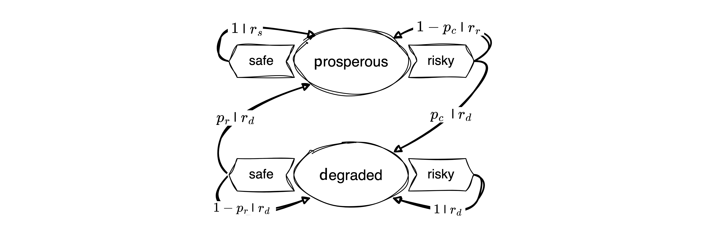

import numpy as np
import pandas as pd
import matplotlib.pyplot as plt
from ipywidgets import interact, interactive
import matplotlib.animation as animation
from IPython.display import HTML
import sympy as sp
from copy import deepcopy
import matplotlib.style as style; style.use('seaborn-v0_8')
plt.rcParams['figure.figsize'] = (15, 4)
color = plt.rcParams['axes.prop_cycle'].by_key()['color'][0]
plt.rcParams['axes.facecolor'] = 'white'; plt.rcParams['grid.color'] = 'gray';
plt.rcParams['grid.linewidth'] = 0.25;
plt.rcParams['figure.dpi'] = 140
np.set_printoptions(legacy='1.25')10 Individual learning
▶ Complex Systems Modeling of Human-Environment Interactions
>> Open the latest version on the web, Github or in GoogleColab <<
Wolfram Barfuss | University of Bonn | 2025/2026
10.1 Motivation
Give a man a fish, and he’ll eat for a day
Teach a man to fish, and he’ll eat for a lifetime
Give a man a taste for fish, and he’ll eat even if conditions change. [source]
In this chapter, we will introduce the basics of temporal-difference reward-prediction reinforcement learning.
Using behavioral theories in ABMs is challenging
General agent-based modeling is a flexible tool for studying different theories of human behavior. However, the social and behavioral sciences are not known for their tendency to integrate. Knowledge about human behavior is fragmented into many different, context-specific, and often not formalized theories. For example, in an attempt to order and use this knowledge for sustainability science, Constantino and colleagues presented a selection of 32 behavioral theories (Constantino et al., 2021).
The many behavioral theories pose a significant challenge for general agent-based modeling when it comes to incorporating human decision-making into models of Nature-society systems (Schlüter et al., 2017):
- Fragmentation of theories: A vast array of theories on human decision-making is scattered across different disciplines, making it difficult to navigate and select relevant theories. Each theory often focuses on specific aspects of decision-making, leading to fragmented knowledge.
- Incomplete theories: The degree of formalization varies across theories. Many decision-making theories are incomplete or not fully formalized, requiring modelers to fill logical gaps with assumptions to make simulations work. This step introduces more degrees of freedom and possibly arbitrariness into the modeling process.
- Correlation-based theories: Many theories focus on correlations rather than causal mechanisms, essential for dynamic modeling. This requires modelers to make explicit assumptions about causal relationships - introducing more degrees of freedom and possibly arbitrariness into the modeling process.
- Context-dependent theories: The applicability of theories can vary greatly depending on the context, which adds complexity to their integration into models.
Reinforcement learning offers a principled take
Reinforcement learning (RL) offers a general prototype model for intelligent & adaptive decision-making in agent-based models.
Principle
“Do more of what makes you happy.”
We do not need to specify the behavior of an agent directly.
Instead, we specify what an agent wants and how it learns. Crucially, how it learns does not depend on the details of the environment model. It is a more general process, applicable across different environments.
Then, it learns for itself what to do and we study the learning process and the learned behaviors.
This approach is particularly valuable for studying human-environment systems when the decision environment changes through a policy intervention or a global change process, like climate change or biodiversity loss. If we had specified the agent’s behavior directly, the agent’s behavior could not change when the environment changes. In contrast, if we specify the underlying agent’s goal, we can study how the agent’s behavior changes when the environment changes. Reinforcement learning agents can learn while interacting with the environment.
An integrating platform for cognitive mechanisms
RL, broadly understood, offers an interdisciplinary platform for integrating cognitive mechanisms into ABMs. It offers a comprehensive framework for studying the interplay among learning (adaptive behavior), representation (beliefs), and decision-making (actions) (Botvinick et al., 2020).

RL is also an interdisciplinary endeavor, studied in Psychology, Neuroscience, Behavioral economics, Complexity science, and Machine learning.
Figure 10.1 shows the remarkable analogy between the firing patterns of dopamine neurons in the brain and the prediction errors in a reinforcement learning simulation.
Figure 10.1 (a-c) shows prediction errors in a Pavlovian RL conditioning task simulation. A conditional stimulus (CS) is presented randomly, followed 2 seconds later by a reward (Unconditional Stimulus - US). (a) In the early training phase, the reward is not anticipated, leading to prediction errors when the reward is presented. As learning occurs, these prediction errors begin to affect prior events in the trial (examples from trials 5 and 10) because predictive values are learned. (b) After learning, the previously unexpected reward no longer creates a prediction error. Instead, the conditional stimulus now causes a prediction error when it occurs unexpectedly. (c) When the reward is omitted when expected, it results in a negative prediction error, signaling that what happened was worse than anticipated.
Figure 10.1 (d–f) Firing patterns of dopamine neurons in monkeys engaged in a similar instrumental conditioning task (SchultzEtAl1997?). Each raster plot shows action potentials (dots) with different rows for different trials aligned with the cue (or reward) timing. Histograms show combined activity across the trials below. (d) When a reward is unexpectedly received, dopamine neurons fire rapidly. (e) After conditioning with a visual cue (which predicted a food reward if the animal performed correctly), the reward no longer triggers a burst of activity; now, the burst happens at the cue’s presentation. (f) If the food reward is omitted unexpectedly, dopamine neurons exhibit a distinct pause in firing, falling below their typical rate.
Source of confusion. Because of its broad scope and interdisciplinary nature, simply the phrase “reinforcement learning” can mean different things to different people. To mitigate this possible source of confusion, it is good to acknowledge that RL can refer to a model of human learning, an optimization method, a problem description, and a field of research.
Learning goals
After this lecture, students will be able to:
- Explain why reinforcement learning is valuable in models of human-environment interactions
- Implement and apply the different elements of the agent-environment framework, including a temporal-difference learning agent.
- Explain and manage the trade-off between exploration and exploitation.
- Visualize the learning process
- Use the Python library
pandasto manage data - Refine their skills in object-oriented programming
10.2 Agent-environment interface
Generally, making sense of an agent without its environment is difficult, and vice versa.

Interface
At the interface between the agent and the environment are
- the agent’s set of (conceivable) actions - from agent to environment,
- extrinsic reward signals - a single number from environment to agent,
- possibly observation signals - from environment to agents.
Note: In general, the environment is composed of the natural and the social environment.
def interface_run(agent, env, NrOfTimesteps):
"""Run the multi-agent environment for several time steps."""
observation = env.observe()
for t in range(NrOfTimesteps):
action = agent.act(observation)
next_observation, reward = env.step(action)
agent.update(observation, action, reward, next_observation)
observations = next_observationEnvironment
The environment delivers extrinsic rewards (motivations) to the agents based on the agents’ chosen actions (choices) and the environment’s current and future state (see Lecture 03.01-SequentialDecisions).
class Environment:
"""Abstract environment class."""
def obtain_StateSet(self):
"""Default state set representation `state_s`."""
return [str(s) for s in range(self.Z)]
def obtain_ActionSet(self):
"""Default action set representation `action_a`."""
return [str(a) for a in range(self.M)]
def step(self,
action: int
) -> tuple: # (observations_Oi, rewards_Ri, info)
"""
Iterate the environment one step forward.
"""
# choose a next state according to transition tensor T
tps = self.TransitionTensor[self.state, action]
next_state = np.random.choice(range(len(tps)), p=tps)
# obtain the current reward
reward = self.RewardTensor[self.state, action, next_state]
# advance the state and collect info
self.state = next_state
# agent observes the environmental state
observation = self.observe()
return observation, reward
def observe(self):
"""Observe the environment."""
return self.state
Agent
Agents choose actions based on their observations to achieve a goal (e.g., maximize reward). We need to specify their
- Goal, describing what an agent wants (in the long run). They may contain intrinsic motivations.
- Representation, e.g., defining upon which conditions agents select actions (e.g., history of past states and actions).
- Value beliefs (value functions), capturing what is good for the agent regarding its goal in the long run.
- Behavioral rule (policy, strategy), defining how to select actions.
- Learning rule, describing how value beliefs are updated in light of new information.
- (optionally), a model of the environment and rewards. Models are used for planning, i.e., deciding on a behavioral rule by considering possible future situations before they are actually experienced.
class RandomAgent:
def __init__(self, policy):
self.policy_Xoa = policy/policy.sum(-1, keepdims=True)
self.ActionIxs = range(self.policy_Xoa.shape[1])
def act(self, obs):
return np.random.choice(self.ActionIxs, p=self.policy_Xoa[obs])
def update(self, *args, **kwargs):
pass10.3 Example | Risk Reward Dilemma

class RiskRewardDilemma(Environment):
"""A simple risk-reward dilemma environment."""
def obtain_StateSet(self):
return ['p', 'd'] # prosperous, degraded
def obtain_ActionSet(self):
return ['c', 'r'] # cautious, riskyTransitions | Environmental dynamics
The environmental dynamics, i.e., the transitions between environmental state contexts are modeled by two parameters: a collapse probability, \(p_c\), and a recovery probability, \(p_r\).
pc, pr = sp.symbols('p_c p_r')p = RiskRewardDilemma().obtain_StateSet().index('p')
d = RiskRewardDilemma().obtain_StateSet().index('d')
c = RiskRewardDilemma().obtain_ActionSet().index('c')
r = RiskRewardDilemma().obtain_ActionSet().index('r')
p,d,c,r (0, 1, 0, 1)We implement the transitions as a three-dimensional array or tensors, with dimensions \(Z \times M \times Z\), where \(Z\) is the number of states and \(M\) is the number of actions.
T = np.zeros((2,2,2), dtype=object)The cautious action guarantees to remain in the prosperous state, \(T(\mathsf{p,c,p})=1\). Thus, the agent can avoid the risk of environmental collapse by choosing the cautious action, \(T(\mathsf{p,c,d})=0\).
T[p,c,d] = 0
T[p,c,p] = 1 The risky action risks the collapse to the degraded state, \(T(\mathsf{p,r,d}) = p_c\), with a collapse probability \(p_c\). Thus, with probability \(1-p_c\), the environment remains prosperous under the risky action, \(T(\mathsf{p,r,p}) = 1-p_c\).
T[p,r,d] = pc
T[p,r,p] = 1-pcAt the degraded state, recovery is only possible through the cautious action, \(T(\mathsf{d,c,p})=p_r\), with recovery probability \(p_r\). Thus, with probability \(1-p_r\), the environment remains degraded under the cautious action, \(T(\mathsf{d,c,d})=1-p_r\).
T[d,c,p] = pr
T[d,c,d] = 1-prFinally, the risky action at the degraded state guarantees a lock-in in the degraded state, \(T(\mathsf{d,r,d})=1\). Thus, the environment cannot recover from the degraded state under the risky action, \(T(\mathsf{d,r,p})=0\).
T[d,r,p] = 0
T[d,r,d] = 1Last, we make sure that our transition tensor is normalized, i.e., the sum of all transition probabilities from a state-action pair to all possible next states equals one, \(\sum_{s'} T(s, a, s') = 1\).
T.sum(-1)array([[1, 1],
[1, 1]], dtype=object)All together, the transition tensor looks as follows,
sp.Array(T)\(\displaystyle \left[\begin{matrix}\left[\begin{matrix}1 & 0\\1 - p_{c} & p_{c}\end{matrix}\right] & \left[\begin{matrix}p_{r} & 1 - p_{r}\\0 & 1\end{matrix}\right]\end{matrix}\right]\)
We give the risk-reward dilemma class its environmental dynamics by substituting the numeric parameter values in the sympy array and converting it to a numeric numpy array, à la
(np.array(sp.Array(T)
.subs({pc: 0.1, pr: 0.05}))
.astype(float))array([[[1. , 0. ],
[0.9 , 0.1 ]],
[[0.05, 0.95],
[0. , 1. ]]])def create_TransitionTensor(self):
"""Create the transition tensor."""
return (np.array(sp.Array(T)
.subs({pc: self.pc, pr: self.pr}))
.astype(float))
RiskRewardDilemma.create_TransitionTensor = create_TransitionTensorRewards | Short-term welfare
The rewards or welfare the agent receives represent the ecosystem services the environment provides. It is modeled by three parameters: a safe reward \(r_s\), a risky reward \(r_r>r_s\), and a degraded reward \(r_d<r_s\). We assume the following default values,
rs, rr, rd = sp.symbols('r_s r_r r_d')We implement the rewards as a four-dimensional array or tensor, with dimensions \(N \times Z \times M \times Z\), where \(N=1\) is the number of agents, \(Z\) is the number of states and \(M\) is the number of actions. The additional agent dimension is necessary to accommodate multi-agent environments.
R = np.zeros((2,2,2), dtype=object)The cautious action at the prosperous state guarantees the safe reward, \(R(\mathsf{p,c,p}) = r_s\),
R[p,c,p] = rsThe risky action at the prosperous leads to the risky reward if the environment does not collapse, \(R(\mathsf{p,r,p}) = r_r\),
R[p,r,p] = rrYet, whenever the environment enters, remains, or leaves the degraded state, it provides only the degraded reward \(R(\mathsf{d,:,:}) = R(\mathsf{:,:,d}) = r_d\), where \(:\) denotes all possible states and actions.
R[d,:,:] = R[:,:,d] = rdTogether, the reward tensor looks as follows:
sp.Array(R)\(\displaystyle \left[\begin{matrix}\left[\begin{matrix}r_{s} & r_{d}\\r_{r} & r_{d}\end{matrix}\right] & \left[\begin{matrix}r_{d} & r_{d}\\r_{d} & r_{d}\end{matrix}\right]\end{matrix}\right]\)
Again, we give the risk-reward dilemma class its reward function by substituting the numeric parameter values in the sympy array and converting it to a numeric numpy array, à la
(np.array(sp.Array(R)
.subs({rr: 1.0, rs: 0.8, rd: 0.0}))
.astype(float))array([[[0.8, 0. ],
[1. , 0. ]],
[[0. , 0. ],
[0. , 0. ]]])def create_RewardTensor(self):
"""Create the reward tensor."""
return (np.array(sp.Array(R)
.subs({rr: self.rr, rs: self.rs, rd: self.rd}))
.astype(float))
RiskRewardDilemma.create_RewardTensor = create_RewardTensorInit method
When initializing an agent, the following method is executed.
def __init__(self, CollapseProbability, RecoveryProbability,
RiskyReward, SafeReward, DegradedReward, state=0):
self.N = 1; self.M = 2; self.Z = 2
self.pc = CollapseProbability
self.pr = RecoveryProbability
self.rr = RiskyReward
self.rs = SafeReward
self.rd = DegradedReward
self.StateSet = self.obtain_StateSet()
self.ActionSet = self.obtain_ActionSet()
self.TransitionTensor = self.create_TransitionTensor()
self.RewardTensor = self.create_RewardTensor()
self.state = state
RiskRewardDilemma.__init__ = __init__Basic testing
Performing some basic tests,
env = RiskRewardDilemma(CollapseProbability=0.2,
RecoveryProbability=0.1,
RiskyReward=1.0,
SafeReward=0.8,
DegradedReward=0.0)
env.TransitionTensorarray([[[1. , 0. ],
[0.8, 0.2]],
[[0.1, 0.9],
[0. , 1. ]]])env.RewardTensorarray([[[0.8, 0. ],
[1. , 0. ]],
[[0. , 0. ],
[0. , 0. ]]])np.random.seed(42)🎬 The environment is in state,
env.StateSet[env.observe()]'p'Using the risky action, the agent transitions to state
next_state, reward = env.step(env.ActionSet.index('r'))
env.StateSet[next_state]'p'and receives are reward of
reward1.0🫳 Hands-on: Reexecute the cells from 🎬 a few times to see when the environment collapses.
Testing the interface,
agent = RandomAgent(policy=np.ones((2,2)))
env = RiskRewardDilemma(0.2, 0.1, 1.0, 0.8, 0.0)
interface_run(agent, env, 10)Obviously, this is not very insightful. We need to track the learning process.
Tracking the learning process
We need to track the learning process. We can do this by storing the actions, observations, and rewards in a pandas DataFrame. Pandas is a powerful data manipulation library in Python that provides data structures and functions to work with structured data. We will store the data of each time step into a row and its attributes into a set of respective columns of the DataFrame.
def interface_run(agent, env, NrOfTimesteps):
"""Run the multi-agent environment for several time steps."""
columns = ["observation", "action", "reward"]
df = pd.DataFrame(index=range(NrOfTimesteps), columns=columns)
observation = env.observe()
for t in range(NrOfTimesteps):
action = agent.act(observation)
next_observation, reward = env.step(action)
agent.update(observation, action, reward, next_observation)
df.loc[t] = (observation, action, reward)
observation = next_observation
return dfTesting the interface,
df = interface_run(agent, env, 25)
df.tail()| observation | action | reward | |
|---|---|---|---|
| 20 | 0 | 0 | 0.8 |
| 21 | 0 | 0 | 0.8 |
| 22 | 0 | 1 | 1.0 |
| 23 | 0 | 1 | 1.0 |
| 24 | 0 | 1 | 1.0 |
def plot_ActionsRewardsObservations(df):
fig, axes = plt.subplots(3,1, figsize=(10,5))
axes[0].plot(df.observation, 'o', label='Agent 0');
axes[0].set_ylabel('Observation')
axes[0].set_yticks([0, 1])
axes[0].set_yticklabels([env.StateSet[0], env.StateSet[1]]);
axes[1].plot(df.action, 'o', label='Agent 0')
axes[1].set_ylabel('Action')
axes[1].set_yticks([0, 1])
axes[1].set_yticklabels([env.ActionSet[0], env.ActionSet[1]])
axes[2].plot(df.reward, 'o', label='Agent 0');
axes[2].set_ylabel('Reward')np.random.seed(0)env.state=0; df = interface_run(agent, env, 25); plot_ActionsRewardsObservations(df)
10.4 Reinforcement learning agent
Agents choose actions based on their observations to achieve a goal (e.g., maximize reward). We need to specify their
- Goal, describing what an agent wants (in the long run). They may contain intrinsic motivations.
- Representation, e.g., defining upon which conditions agents select actions (e.g., history of past states and actions).
- Value beliefs (value functions), capturing what is good for the agent regarding its goal in the long run.
- Behavioral rule (policy, strategy), defining how to select actions.
- Learning rule, describing how value beliefs are updated in light of new information.
- (optionally), a model of the environment and rewards. Models are used for planning, i.e., deciding on a behavioral rule by considering possible future situations before they are actually experienced.
Goal
As in Lecture 03.01-SequentialDecision, the agent aims to maximize the discounted sum of future rewards,
\[ G_t = (1-\gamma) \sum_{\tau=0}^\infty \gamma^\tau R_{t+\tau},\]
where \(1-\gamma\) is a normalizing factor and \(R_{t+\tau}\) is the reward received at time step \(t+\tau\).
However, in contrast to Lecture 03.01-SequentialDecision, we assume that the agent does not know the environment’s dynamics and rewards. Instead, the agent learns about the environment while interacting with it.
The challenge is that actions may have delayed and uncertain consequences.
Delayed consequences mean that an action may influence the environmental state, which, in turn, influences the reward the agent receives at a later time step. For example, in our risk-reward dilemma, opting for a sustainable policy may initially reduce the agent’s immediate reward but ensures a comparably higher long-term welfare. Uncertain consequences refer to the stochasticity in the environmental transitions (and possibly the reward signals themselves). For example, in our risk-reward dilemma, the risky action in the prosperous state may lead to a high reward but may also cause a transition to the degraded state. Moreover, uncertainty may also refer to the fact that the environmental transition dynamics may change over time.
Thus, the agent can’t just try each action in each state once and then immediately know which course of action is best. It must learn the best course of action over successive trials, each of which gives possible noisy data.
Representation
As the RandomAgent above, we here consider agents that learn to associate an action with each observation. To do so, the agent learns how valuable each action \(a\) is to play when observing each observation \(o\). It represents its current beliefs of these values in a ValueBeliefs_Qoa array.
We start implementing the learning class by defining __init__ method.
class Learner():
"""A simple reinforcement learning agent."""
def __init__(self, ValueBeliefs_Qoa,
DiscountFactor, LearningRate, ChoiceIntensity):
self.DiscountFactor = self.df = DiscountFactor
self.LearningRate = self.lr = LearningRate
self.ChoiceIntensity = self.ci = ChoiceIntensity
self.ValueBeliefs_Qoa = ValueBeliefs_Qoa
self.ActionIxs = range(ValueBeliefs_Qoa.shape[1])The agent receives the following parameters: the initial value beliefs ValueBeliefs_Qoa, the discount factor DiscountFactor, the learning rate LearningRate, and the choice intensity ChoiceIntensity. Furthermore, we give the agent an attribute ActionIxs that stores the indices of the possible actions. This will be helpful when selecting actions.
Value beliefs
The general strategy we use to address the challenges of delayed and uncertain consequences is to let the agent learn value beliefs. Value beliefs are the agent’s estimates of the long-term value of each action \(a\) under each observation \(o\). The agent then uses these value beliefs to select actions. These estimates are also often referred to as Q values. You may think of the quality of an action \(a\) in state \(s\), which tells the agents which action to select in which state.
For example, in the risk-reward dilemma, we can represent the agent’s value beliefs by
np.random.seed(42)
ValueBeliefs_Qoa = 10 * np.random.rand(2,2)
ValueBeliefs_Qoaarray([[3.74540119, 9.50714306],
[7.31993942, 5.98658484]])The challenge of uncertain consequences in then solved by an appropriate behavioral rule which handles the so-called exploration-exploitation trade-off
The challenge of delayed consequences is solved by the learning rule, which updates the value beliefs in light of new information using the Bellman equation, as in Lecture 03.01-SequentialDecisions.
Behavioral rule
A behavioral rule must deal with the exploration-exploitation trade-off, which poses a fundamental problem for decision-making under uncertainty.
Under too much exploitation, the agent may pick an action that is not optimal, as it has not yet sufficiently explored all possible actions. It acts under the false belief that its current value beliefs are already correct or optimal. Thus, it loses out on possible rewards it would have gotten if it had explored more and discovered that a different course of action is better.
Under too much exploration, the agent may continue to try all actions to gain as much information about the transitions and reward distributions as possible. It is losing out because it never settles on the best course of action, continuing to pick all actions until the end.
What is needed is a behavioral rule that balances exploitation and exploration to explore enough to find the best option but not too much so that the best option is exploited as much as possible.
We use the so-called softmax function,
\[x(o, a) = \frac{\exp \beta Q(o, a)}{\sum_{b \in \mathcal A}\exp \beta Q(o, b)},\]
which converts any set of value beliefs into probabilities that sum to one.
The higher the relative value belief, the higher the relative probability.
def obtain_softmax_probabilities(ChoiceIntensity, ValueBeliefs):
expValueBeliefs = np.exp(ChoiceIntensity*np.array(ValueBeliefs))
return expValueBeliefs / expValueBeliefs.sum(-1, keepdims=True)The softmax function contains a parameter \(\beta\), denoting the choice intensity (sometimes called inverse temperature, that determines how exploitative (or greedy) the agent is.
When \(\beta = 0\), arms are chosen entirely at random with no influence of the Q values. This is super exploratory, as the agent continues to choose all arms irrespective of observed rewards.
obtain_softmax_probabilities(0, ValueBeliefs_Qoa)array([[0.5, 0.5],
[0.5, 0.5]])As \(\beta\) increases, there is a higher probability of picking the arm with the highest Q value. This is increasingly exploitative (or ‘greedy’).
obtain_softmax_probabilities(1, ValueBeliefs_Qoa)array([[0.00313576, 0.99686424],
[0.79139498, 0.20860502]])When \(\beta\) is very large, then only the arm that currently has the highest Q value will be chosen, even if other arms might actually be better.
obtain_softmax_probabilities(50, ValueBeliefs_Qoa).round(9)array([[0., 1.],
[1., 0.]])For example, assuming we are in state zero and using \(\beta=1\), we can select an action by
obs = 0
Xoa = obtain_softmax_probabilities(1, ValueBeliefs_Qoa)
np.random.choice([0,1], p=Xoa[obs])1We summarize this logic in the agent’s act method:
def act(self, obs):
Xoa = self.obtain_policy_Xoa()
return np.random.choice(self.ActionIxs, p=Xoa[obs])
Learner.act = actwhere we define the ActionIxs as range(self.NrActions) in the __init__ method of the agent. We also define the obtain_policy_Xoa method in the agent class:
def obtain_policy_Xoa(self):
return obtain_softmax_probabilities(self.ChoiceIntensity, self.ValueBeliefs_Qoa)
Learner.obtain_policy_Xoa = obtain_policy_XoaTesting the act and obtain_policy_Xoa methods:
learner = Learner(np.ones((2,2)), 0.9, 0.1, 1.0)learner.obtain_policy_Xoa()[0]array([0.5, 0.5])Selecting action uniformly at random for 1000 times should give a mean index of approx. 0.5:
np.mean([learner.act(0) for _ in range(1000)])0.498Learning rule
The learning rule solves the challenge of delayed consequences. The value beliefs are updated using the Bellman equation in light of new information. As the Bellman equation describes how state(-action) values relate at different timesteps, this reinforcement learning update class is called temporal-difference learning.
Given an observed state \(s\), the agent selects an action \(a\) and receives a reward \(r\). Then, the agent updates its value beliefs (for state-action pair \(s\)-\(a\)) according to
\[Q_{t+1}(s, a) = Q_{t}(s, a) + \alpha\left((1-\gamma)r + \gamma \sum_b x_t(s', b) Q_t(s',b) - Q_{t}(s, a) \right). \tag{10.1}\]
DeepDive | There is some freedom into designing the specifics of the temporal-difference update, especially regarding estimating the value of the next state or observation. The specific update used above is called Expected SARSA. It is beyond the scope of this course to discuss the different temporal-difference learning algorithms. The interested reader is referred to excellent material on (multi-agent) reinforcement learning, e.g., (Albrecht et al., 2024; Sutton & Barto, 2018).
The extent to which the value beliefs are updated is controlled by a second parameter, \(\alpha \in (0, 1)\), called the learning rate.
When \(\alpha=0\), there is no updating, and the reward does not affect value beliefs,
\[Q_{t+1}(s, a) =\!\!|_{\alpha=0} \ \, Q_{t}(s, a) =: \text{old estimate}.\]
The value belief update always remains the old estimate of the value beliefs.
When \(\alpha = 1\), the value belief for the state-action pair (\(s, a\)) becomes a discount-factor weighted average between the current reward \(r\) and the expected value of the next state \(\sum_b x_t(s', b) Q_t(s',b)\),
\[Q_{t+1}(s, a) =\!\!|_{\alpha=1} \ \, (1-\gamma)r + \gamma \sum_b x_t(s', b) Q_t(s',b) =: \text{new estimate}.\]
The value belief update is entirely determined by the new estimate of the value beliefs, which is the current reward received \(r\) plus the discount factor \(\gamma\) multiplied by the expected value of the following state \(\sum_b x_t(s', b) Q_t(s',b)\), and adequately normalized with the prefactor \((1-\gamma)\).
When \(0 < \alpha < 1\), the new value belief for the rewarded arm is a weighted average between old value belief and new reward information,
\[\begin{align} Q_{t+1}(s, a) &= (1-\alpha) \ \text{old estimate} &+ &\alpha \ \text{new estimate}\\ &= (1-\alpha) \ Q_{t}(s, a) &+ &\alpha \left((1-\gamma)r + \gamma \sum_b x_t(s', b) Q_t(s',b)\right). \end{align}\]
Once more, we face a trade-off. Clearly, setting \(\alpha = 0\) is ineffective, as the agent does not acquire knowledge. Yet, if \(\alpha\) is excessively high, the agent tends to forget previously learned observation-action associations.
Temporal-difference reward-prediction error. Another way to think about the update equation (Equation 10.1) is as follows: The value beliefs are updated by the temporal-difference reward-prediction error (TDRP error) times the learning rate. The TDRP error equals the difference between the new estimate and the old estimate of the value beliefs. If the TDRP error is zero, the agent correctly predicted the next reward, and thus, no further adjustments in the value beliefs are necessary.
\[\begin{align} Q_{t+1}(s, a) &= Q_{t}(s, a) + \alpha \qquad\qquad\qquad\qquad\qquad \text{TDRP-error}, \\ &= Q_{t}(s, a) + \alpha \Big( \qquad \qquad \text{new estimate} \qquad \qquad \ - \text{old estimate} \Big), \\ &= Q_{t}(s, a) + \alpha \Big( (1-\gamma)r + \gamma \sum_b x_t(s', b) Q_t(s',b) - \quad Q_{t}(s, a) \quad \Big) \end{align}\]
DeepDive | The exact terminology temporal-difference reward-prediction error is used rather rarely. We use it here to express the interdisciplinary nature of temporal-difference reward-prediction learning. In machine learning, the term temporal-difference error is more common. It describes the difference between the predicted and the observed reward. In psychology and neuroscience, the term reward-prediction error is used in the context of the brain’s dopamine system, where it is thought to signal the difference between the expected and the observed reward. The term temporal-difference reward-prediction error combines both terms, expressing the idea that the agent learns by predicting future rewards.
Executing the value belief update in Python may look like
def update(self,
obs: int,
action: int,
reward: float,
next_obs: int,
):
"""Updates the value beliefs / Q-value of an action."""
temporal_difference =self.obtain_temporal_difference(
obs, action, reward, next_obs)
self.ValueBeliefs_Qoa[obs, action] = (
self.ValueBeliefs_Qoa[obs, action]
+ self.LearningRate * temporal_difference
)
Learner.update = updateWe program the update method highly modular. It calls the obtain_temporal_difference method to compute the temporal-difference error and then updates the value beliefs accordingly. The obtain_temporal_difference method is defined as follows:
def obtain_temporal_difference(self,
obs: int,
action: int,
reward: float,
next_obs: int,
):
"""Compute temporal-difference eorror"""
next_Qoa = self.obtain_nextQoa(next_obs)
new_estimate = ((1-self.DiscountFactor) * reward
+ self.DiscountFactor * next_Qoa)
old_estimate = self.ValueBeliefs_Qoa[obs][action]
return new_estimate - old_estimate
Learner.obtain_temporal_difference = obtain_temporal_differenceIn here, we call the obtain_nextQoa method to compute the expected value of the next state. The obtain_nextQoa method is defined as follows:
def obtain_nextQoa(self, next_obs: int):
policy_Xoa = self.obtain_policy_Xoa()
return np.sum(policy_Xoa[next_obs] * self.ValueBeliefs_Qoa[next_obs])
Learner.obtain_nextQoa = obtain_nextQoaTesting the update method: First, let’s assume the agent does not care about future rewards at all and has a discount factor of zero
learner = Learner(ValueBeliefs_Qoa = np.ones((2,2)),
DiscountFactor = 0.0,
LearningRate = 0.1,
ChoiceIntensity = 1.0)learner.ValueBeliefs_Qoaarray([[1., 1.],
[1., 1.]])Let’s assume the agent selected the action with index 0 after observing the state with index 0, received a reward of zero, and observed the next state with index 1.
learner.update(obs=0, action=0, reward=0, next_obs=1)
learner.ValueBeliefs_Qoa.round(4)array([[0.9, 1. ],
[1. , 1. ]])The value belief for the action 0 in state 0 is updated exactly as a learning rate weighted average: \(\alpha \cdot \text{new estimate} + (1-\alpha) \cdot \text{old estimate}\) \(= \alpha 0 + (1-\alpha) 1\) \(= 0.1 \cdot 0 + 0.9 \cdot 1\).
Repeating this update a hundred more time steps updates the value beliefs for the action 0 in state 0 to the expected value of zero.
for _ in range(100): learner.update(obs=0, action=0, reward=0, next_obs=1)
learner.ValueBeliefs_Qoa.round(4)array([[0., 1.],
[1., 1.]])Now, we repeat that test, but with an agent with a discount factor of \(\gamma=0.8\).
learner = Learner(ValueBeliefs_Qoa = 1*np.ones((2,2)),
DiscountFactor = 0.8,
LearningRate = 0.1,
ChoiceIntensity = 1.0)learner.ValueBeliefs_Qoaarray([[1., 1.],
[1., 1.]])for _ in range(100): learner.update(obs=0, action=0, reward=0, next_obs=1)
learner.ValueBeliefs_Qoa.round(4)array([[0.8, 1. ],
[1. , 1. ]])Now, the value belief for the action 0 in state 0 is updated to \(0.8\). Can you explain why?
We have convinced ourselves that the learner’s update methods works as we expect.
Now, we are ready to let it learn in the risk-reward dilemma environment.
Testing the interface
np.random.seed(42)
learner = Learner(ValueBeliefs_Qoa = np.ones((2,2)),
DiscountFactor = 0.9,
LearningRate = 0.1,
ChoiceIntensity = 1.0)
print(learner.obtain_policy_Xoa())
env = RiskRewardDilemma(CollapseProbability=0.2, RecoveryProbability=0.1,
SafeReward=0.8, RiskyReward=1.0, DegradedReward=0.0)
print(" - - - - ")
df = interface_run(learner, env, 10000)
print(" - - - - ")
print(learner.obtain_policy_Xoa())[[0.5 0.5]
[0.5 0.5]]
- - - -
- - - -
[[0.52328547 0.47671453]
[0.50631145 0.49368855]]The learning agent’s policy changed. However, not too much. We know from Lecture 03.01-SequentialDecisions that the agent should learn to prefer the cautious action in both states under these parameter settings.
🫳 Hands-on: Try re-executing the above cell while making some changes to the parameters. Can you get an intuition of what is important for a successful learning process?
The process of finding the right parameters for the agent is called hyperparameter tuning. It is a crucial step in machine learning and often requires a lot of trial and error.
From a modeling point of view, we aim to go beyond finding the right parameter. We aim to understand how the parameters influence the learning process.
Comparing the initial with the final policy is not the best way to facilitate both aims. We need a more refined way to keep track of the learning process.
10.5 Investigating the learning process
To keep track of the learning process, we store the value beliefs and the policy in a pandas DataFrame. Aditionally, we also record the learning rate and the choice intensity.
def interface_run(agent, env, NrOfTimesteps):
"""Run the multi-agent environment for several time steps."""
columns = ["action", "observation", "reward", "beliefs", "policy",
"ChoiceIntensity", "LearningRate"]
df = pd.DataFrame(index=range(NrOfTimesteps), columns=columns)
observation = env.observe()
for t in range(NrOfTimesteps):
action = agent.act(observation)
next_observation, reward = env.step(action)
agent.update(observation, action, reward, next_observation)
df.loc[t] = (action, next_observation, reward,
deepcopy(agent.ValueBeliefs_Qoa),
deepcopy(agent.obtain_policy_Xoa()),
deepcopy(agent.ChoiceIntensity),
deepcopy(agent.LearningRate))
observation = next_observation
return dfRunning the interface,
np.random.seed(42)
learner = Learner(ValueBeliefs_Qoa = 0*np.ones((2,2)),
DiscountFactor = 0.9,
LearningRate = 0.05,
ChoiceIntensity = 8.0)
env = RiskRewardDilemma(CollapseProbability=0.2, RecoveryProbability=0.1,
SafeReward=0.8, RiskyReward=1.0, DegradedReward=0.0)
df = interface_run(learner, env, 10000)As we stored the value beliefs and policies as two-dimensional numpy arrays, we convert them into three-dimensional numpy with time running on the first dimension:
beliefs_Qtoa = np.array(df.beliefs.values.tolist())
policy_Xtoa = np.array(df.policy.values.tolist())
beliefs_Qtoa.shape, policy_Xtoa.shape((10000, 2, 2), (10000, 2, 2))We include these conversions into a plotting function that visualizes the learning process
def plot_learning_process(df, plot_varying_parameters=False):
beliefs_Qtoa = np.array(df.beliefs.values.tolist())
policy_Xtoa = np.array(df.policy.values.tolist())
beliefs_Qtoa.shape, policy_Xtoa.shape
fig = plt.figure(figsize=(14,6))
ax0 = fig.add_subplot(311)
ax0.plot(beliefs_Qtoa[:,p,c], label='Q(p,c)', color='blue', lw=2)
ax0.plot(beliefs_Qtoa[:,p,r], label='Q(p,r)', color='red', lw=2)
ax0.plot(beliefs_Qtoa[:,d,c], label='Q(d,c)', color='darkblue', ls='--')
ax0.plot(beliefs_Qtoa[:,d,r], label='Q(d,r)', color='darkred', ls='--')
ax0.set_ylabel('Value beliefs');
ax0.legend(loc='center right'); ax0.set_xlim(-10, len(df)*1.1)
ax1 = fig.add_subplot(312, sharex=ax0)
ax1.plot(policy_Xtoa[:,p,c], label='X(p,c)', color='blue', lw=2)
ax1.plot(policy_Xtoa[:,p,r], label='X(p,r)', color='red', lw=2)
ax1.plot(policy_Xtoa[:,d,c], label='X(d,c)', color='darkblue', ls='--')
ax1.plot(policy_Xtoa[:,d,r], label='X(d,r)', color='darkred', ls='--')
ax1.set_ylabel('Policy'); ax1.set_xlabel('Time steps')
ax1.legend(loc='center right')
if plot_varying_parameters:
ax2 = fig.add_subplot(615, sharex=ax0)
ax2.plot(df.LearningRate, label='LearningRate', color='k')
ax2.set_ylabel("Learning\nRate")
ax3 = fig.add_subplot(616, sharex=ax0)
ax3.plot(df.ChoiceIntensity, label='ChoiceIntensity', color='k')
ax3.set_ylabel("Choice\nIntensity"), ax3.set_xlabel('Time steps')
# plt.tight_layout()
plt.subplots_adjust(hspace=0.35)
# plt.legend()
ax0.set_ylim(0, 1);Too much exploration
What happens if the agent explores too much? Can the agent learn the optimal policy, in this case, the cautious policy?
np.random.seed(42)learner = Learner(ValueBeliefs_Qoa = 0*np.ones((2,2)),
DiscountFactor = 0.9,
LearningRate = 0.1,
ChoiceIntensity = 1.0)
env = RiskRewardDilemma(CollapseProbability=0.2, RecoveryProbability=0.1,
SafeReward=0.8, RiskyReward=1.0, DegradedReward=0.0)
df = interface_run(learner, env, 10000)plot_learning_process(df)
The order of the value beliefs seems roughly consistent with the optimal policy, that prefers the cautious action over the risky on in both states. However, the agents policy is fluctuating around. The action choice probabilities are fluctuating around their uniformly random value of 0.5. This is a sign that the agent explores too much and exploits too little.
🫳 Hands-on: Convince yourself of the learning process under high exploration by re-executing the above cell multiple times.
Too little exploration
Can the agent learn the optimal (cautious) policy under little exploration?
np.random.seed(0)learner = Learner(ValueBeliefs_Qoa = 0*np.ones((2,2)),
DiscountFactor = 0.9,
LearningRate = 0.1,
ChoiceIntensity = 250.0)
env = RiskRewardDilemma(CollapseProbability=0.2, RecoveryProbability=0.1,
SafeReward=0.8, RiskyReward=1.0, DegradedReward=0.0)
df = interface_run(learner, env, 10000)plot_learning_process(df)
Increasing the choice intensity leads to a more exploitative policy. However, what the agent learns depends on the stochasticity of the learning process. In other words, the agent may not learn the optimal policy. Too little exploration harms the learning.
🫳 Hands-on: Convince yourself of the learning process under high exploitation by re-executing the above cell multiple times.
Decaying exploration
To mitigate the negative effects of too much exploration towards the end of the learning process and the negative effects of too much exploitation towards the beginning of the learning process, we could let the choice intensity increase over time. This is called decaying exploration.
We implement this idea by creating a new agent class AdjustingLearner that inherits from the Learner class. This shows the power of object-oriented programming. We overwrite the update method to include an increasing choice intensity. We also make the learning rate decay over time.
class AdjustingLearner(Learner):
def __init__(self,
ValueBeliefs_Qoa,
DiscountFactor,
LearningRate, MinLearningRate, LearningRateDecayFactor,
ChoiceIntensity, MaxChoiceIntensity, ChoiceIntensityGrowthFactor,
):
self.DiscountFactor = DiscountFactor
self.LearningRate = LearningRate
self.MinLearningRate = MinLearningRate
self.LearningRateDecayFactor = LearningRateDecayFactor
self.ChoiceIntensity = ChoiceIntensity
self.MaxChoiceIntensity = MaxChoiceIntensity
self.ChoiceIntensityGrowthFactor = ChoiceIntensityGrowthFactor
self.ValueBeliefs_Qoa = ValueBeliefs_Qoa
self.ActionIxs = range(ValueBeliefs_Qoa.shape[1])def update(self,
obs: int,
action: int,
reward: float,
next_obs: int,
):
"""Updates the value beliefs / Q-value of an action."""
temporal_difference =self.obtain_temporal_difference(
obs, action, reward, next_obs)
self.ValueBeliefs_Qoa[obs, action] = (
self.ValueBeliefs_Qoa[obs, action] + self.LearningRate * temporal_difference
)
self.LearningRate = max(self.MinLearningRate,
self.LearningRate * self.LearningRateDecayFactor)
self.ChoiceIntensity = min(self.MaxChoiceIntensity,
self.ChoiceIntensity * self.ChoiceIntensityGrowthFactor)
AdjustingLearner.update = updateNow, we are ready to perform a new learning simulation.
np.random.seed(42)learner = AdjustingLearner(ValueBeliefs_Qoa = 0*np.ones((2,2)),
DiscountFactor = 0.9,
LearningRate = 0.1, MinLearningRate = 0.01, LearningRateDecayFactor = 0.999,
ChoiceIntensity = 1.0, MaxChoiceIntensity = 50.0, ChoiceIntensityGrowthFactor = 1.001)
env = RiskRewardDilemma(CollapseProbability=0.2, RecoveryProbability=0.1,
SafeReward=0.8, RiskyReward=1.0, DegradedReward=0.0)
df = interface_run(learner, env, 10000)plot_learning_process(df, plot_varying_parameters=True)
We find that the AdjustingLearner is able to consistently learn the optimal policy.
🫳 Hands-on: Try to convince yourself that this is true by re-executing the simulation above multiple times.
Obviously, the AdjustingLearner is a more complex agent than the Learner. There is also a prominent trick to give our simpler Learner agent an initial exploration bonus.
Initial exploration bonus
We can give the agent an initial exploration bonus by setting the initial value beliefs to a high value. This is called optimistic initialization.
np.random.seed(42)learner = Learner(ValueBeliefs_Qoa = 8*np.ones((2,2)),
DiscountFactor = 0.9,
LearningRate = 0.1,
ChoiceIntensity = 60.0)
env = RiskRewardDilemma(CollapseProbability=0.2, RecoveryProbability=0.1,
SafeReward=0.8, RiskyReward=1.0, DegradedReward=0.0)
df = interface_run(learner, env, 10000)plot_learning_process(df)
🫳 Hands-on: Convince yourself that optimistic initialization works by re-executing the simulation above multiple times.
10.6 Learning goals revisited
- Reinforcement learning is valuable in models of human-environment interactions as a principled take to integrate individual cognition in dynamic environments and emerging collective behavior
- We implemented the different elements of the multi-agent environment framework (interface, environment, agents).
- We implemented and applied a basic temporal-different learning agent.
- We implemented and applied the risk-reward dilemma (Lecture 03.01)
- We visualized the learning process
- We introduced and studied the exploration-exploitation trade-off, a general challenge for decision-making under uncertainty.
- We made all of this possible by using the Python library
pandasto manage data and refining our skills in object-oriented programming.
The exercises for this lecture will explore the learning process in a risk-reward dilemma where the risky policy is the optimal one.
Key advantages of an RL framework
- Cognitive mechanisms are more integrated / less fragmented than behavioral theories
- Cognitive mechanisms (as in RL) are more formalized than behavioral theories
- The RL frame provides a natural dynamic extension to some economic equilibrium decision models.
- The RL frame allows for the study of behavior changes (e.g., after experimental policy interventions or environmental catastrophes)
So far, we have investigated the learning process in a single environment.
Next, we will explore learning in games to illustrate the modularity of the agent-environment interface, utilizing the same learning agents as previously discussed.